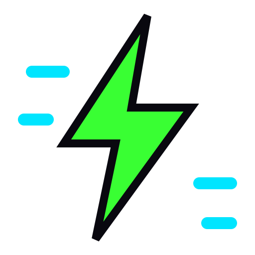

ASSET PACK / PNG
PNG RENDERS
2× renders of every icon, the logo mark and the wordmark.


| FILE | FORMAT | SIZE | PURPOSE |
|---|---|---|---|
| png/favicon-512.png | PNG · 512×512 | 4.2 kB | favicon rendered at 512px |
| png/icon-agent.png | PNG · 512×512 | 8.5 kB | CLI AI agent head |
| png/icon-bar.png | PNG · 512×512 | 6.8 kB | Omarchy bar widget with live readout |
| png/icon-bolt.png | PNG · 512×512 | 14.4 kB | live telemetry / lightning summary |
| png/icon-budget.png | PNG · 512×512 | 16.3 kB | per-agent budget cap gauge |
| png/icon-clock.png | PNG · 512×512 | 17.6 kB | wrapper duration measurement |
| png/icon-download.png | PNG · 512×512 | 6.6 kB | asset pack download glyph |
| png/icon-ghostty.png | PNG · 512×512 | 13.8 kB | Ghostty isolation profile |
| png/icon-grid.png | PNG · 512×512 | 2.0 kB | 2x2 token grid — plugin identity glyph |
| png/icon-ledger.png | PNG · 512×512 | 12.1 kB | SQLite ledger (token_usage + agents) |
| png/icon-palette.png | PNG · 512×512 | 24.4 kB | 312-theme chooser palette |
| png/icon-pipeline.png | PNG · 512×512 | 10.7 kB | alias -> wrapper -> daemon -> ledger |
| png/icon-rule.png | PNG · 512×512 | 12.1 kB | Hyprland Lua window rule braces |
| png/icon-shield.png | PNG · 512×512 | 14.9 kB | local-only data (nothing leaves the host) |
| png/icon-terminal.png | PNG · 512×512 | 10.9 kB | Rust TUI terminal window |
| png/icon-token.png | PNG · 512×512 | 24.8 kB | a single counted token |
| png/icon-window.png | PNG · 512×512 | 9.0 kB | 1100x650 floating window rule |
| png/logo-mark.png | PNG · 512×512 | 32.5 kB | hex token-grid emblem, 512px |
| png/logo-wordmark.png | PNG · 720×240 | 12.0 kB | stacked TOKEN/GRID wordmark with meter bar |


◆ ../pack.json — full manifest · MIT · © Cybercore Tech